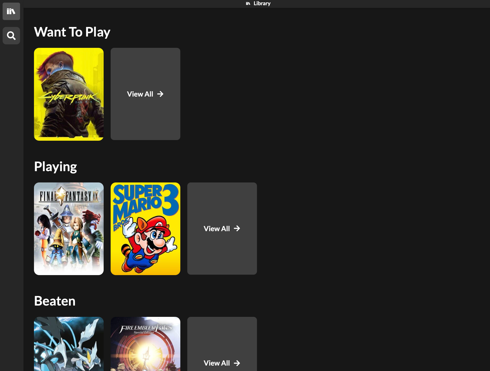
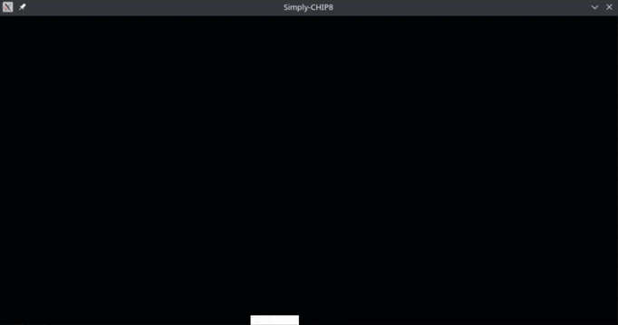

Distronator : A Distribution-agnostic Bash Configuration Script
Generator
Stack :: NextJS / TailwindCSS / FastAPI / PostgreSQL
Currently, I am working on a web app called Distronator,
inspired by
ChrisTitusTech's Windows Utility. I'm a big Linux guy, I've been using it for almost five years now.
I've found that the hardest thing for new users to grasp is
configuration. The post-install process of any Linux is usually
automated by many long-time users, who opt to write their own Bash
scripts that automate the entire process, usually installing all of
their favorite programs, configuring them how they like, and changing
some system settings. The unacquainted new Linux user has no idea
about any of these things! Granted, they will learn over time, but
what if there was a useful tool to automatically generate Bash scripts
to do everything somebody could want set up on their system
from the get-go?
This is where I got the idea for Distronator, a web-app that
functions like ChrisTitusTech's Windows Utility, with an interface
akin to PCPartPicker.
Initially, I want it to be just a configuration script generator.
However, if it were to gain traction, I'd love to make a section where
people can share their configurations for whatever they want, whether
it be their .bashrc, their
nvim configuration, or just cool scripts they use in
their workflow.
PachinGO! : A spiritual successor to Peggle
Stack: Construct 3 / ExpressJS / MongoDB
PachingGO! is my senior seminar project. Myself and two others
are building a spiritual successor to Popcap's beloved game
Peggle, playable in the web browser. The big distinction
between our game and the original Peggle is our inclusion of a
level editor, allowing players to upload their own background images
and build levels around them, and ultimately uploading them to a
database for others to play.
GamePile : A video game backlog manager
Stack: React / TailwindCSS / Tauri (Rust Backend) / SQLite

GamePile is a semi offline-compatiable video game backlog manager inspired by sites such as GGApp This is a project I built mainly just to learn the frontend a lot more, namely React and TailwindCSS. The goal was to solve a problem that I was facing: practically every single video game backlog manager I have used is tied to a website. This means that my collection can disappear at the will of the maintainer. My goal was to create an offline-compatiable backlog manager, written natively with a Rust backend and utilizing a local SQLite database. It didn't turn out as I'd really hoped, as it was more of a learning experience than anything, and I realized how big the local database would get it if had to store all game info locally, including covers and screenshots. Even just caching the assets locally only for the games you add to your collection can grow in size super quick. So, ultimately, this didn't turn out to be a mature product. However, I'd love to rebuild it as a web app in the future, as I enjoyed adding features that I did not find in other services. The difficulty will come from building my own database of games, since all free ones are pretty subpar.
PL/0 Compiler
Stack: C++ / CMake
One of my earlier projects, a simple compiler for the minimized dialect of PL called PL/0. I never finished it, but it does currently have a working lexer and parser. I started working on a transpiler, so that it could transpile everything to C and then compile it with gcc or an equivalent C compiler

CHIP-8 Emulator
Stack: C / SDL
What I consider to be my first "real" project, I built a CHIP-8 emulator in C. I've always been very interested in hardware emulation, so I built the simplest emulator possible. It was a lot of fun.